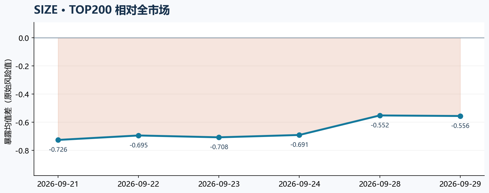
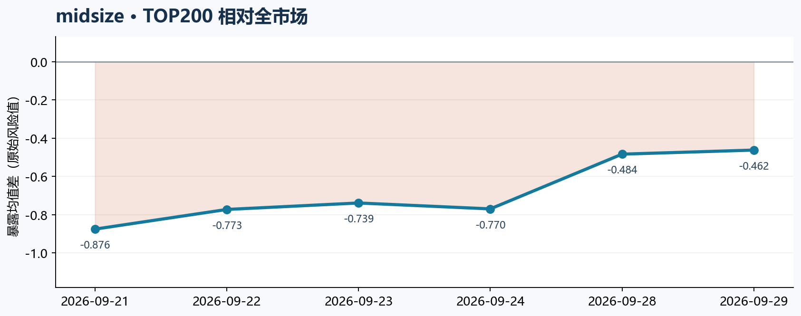
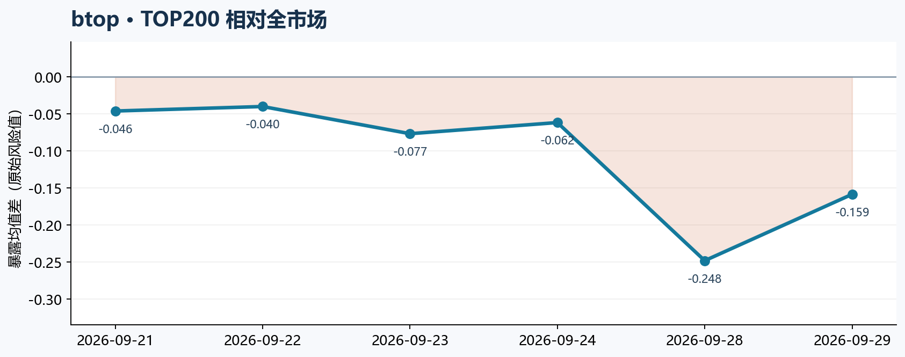
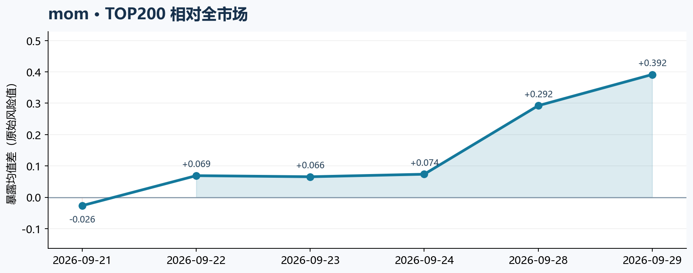
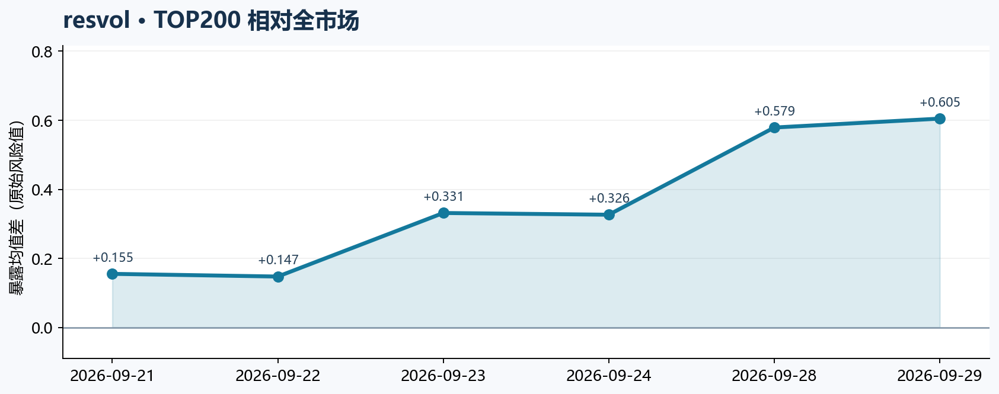
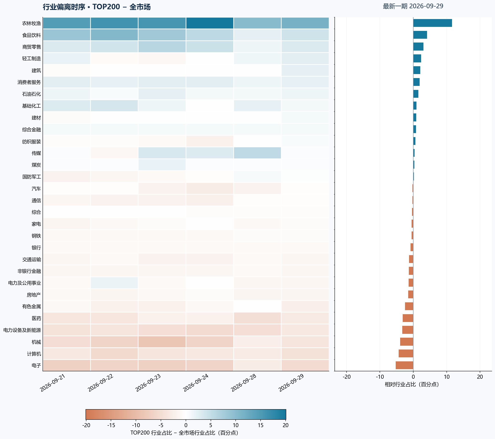
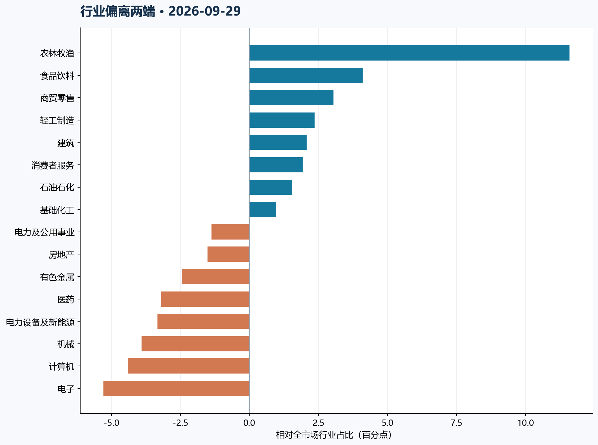

PUBLISHED EXPOSURE
已发布信号 TOP200 的风格与行业暴露
只读取 Git 已上传的历史信号。每日按剔除收盘涨停后的前 200 只等权，与同日风险文件中的全市场股票等权均值比较。
6已发布信号日
2026-09-29最新信号日
200 / 200每天风险数据匹配
读图口径：风格图为 TOP200 原始因子均值 − 全市场原始因子均值；行业图为 TOP200 行业占比 − 全市场行业占比，单位百分点。正值表示偏多，负值表示偏少。不同风格的数值尺度不能直接横向比较。
五个风格 · 每个风格一张图
SIZE

midsize

btop

mom

resvol

行业 · 30 行热力图与最新偏离


最新风格差：SIZE -0.556 · midsize -0.462 · btop -0.159 · mom +0.392 · resvol +0.605。行业偏多最大：农林牧渔 +11.59 pp；偏少最大：电子 -5.29 pp。